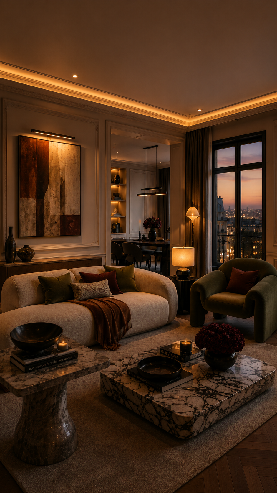
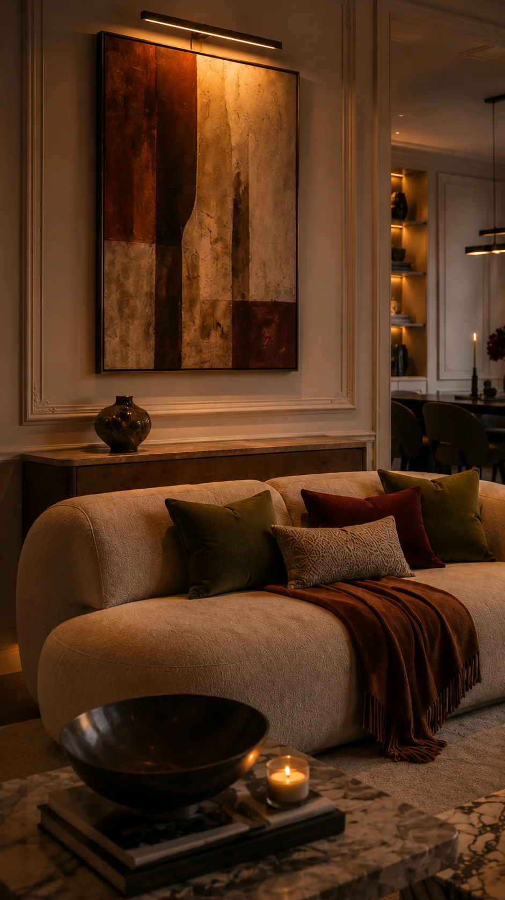
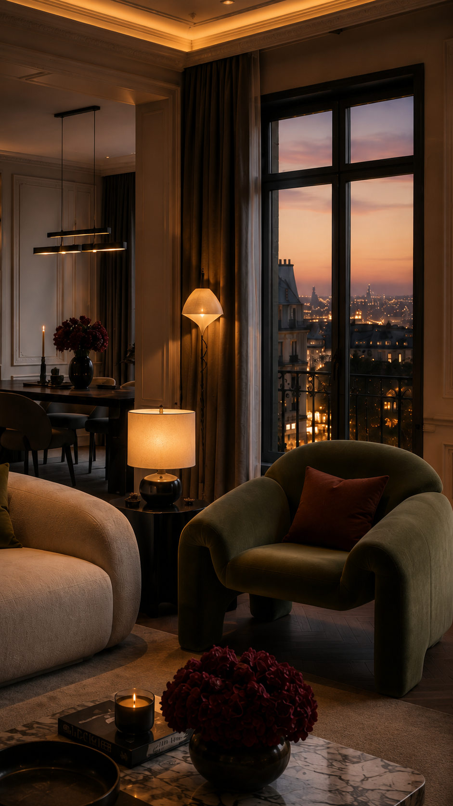
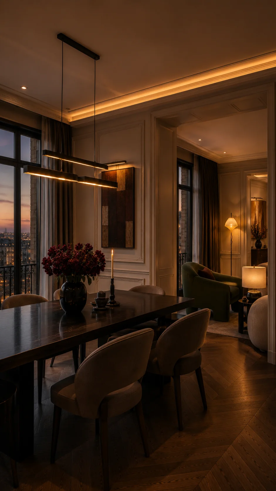
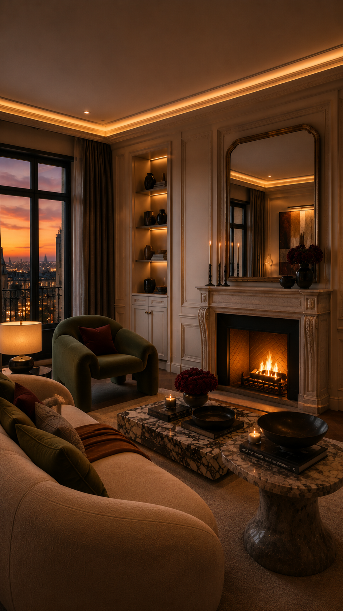
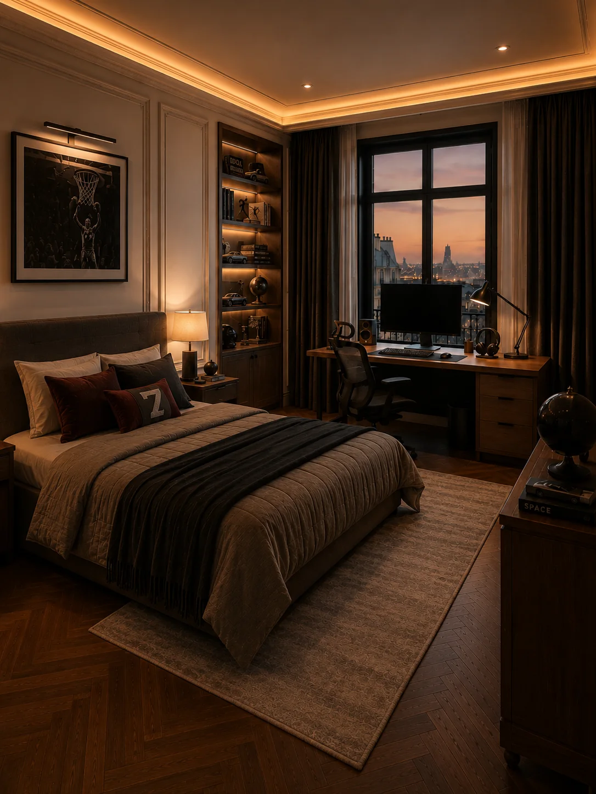
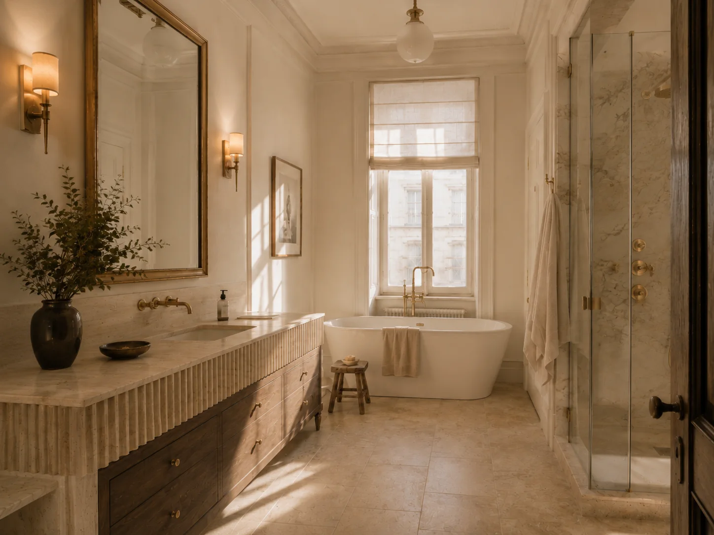

Проект 04
Париж после заката
Вечерняя версия парижского интерьера: мягкие источники света, глубокие винные и оливковые акценты, тёмное дерево и приглушённый блеск металла. Пространство строится не на декоре, а на свете, тени и фактуре.
- Место
- Париж, Франция
- Тип
- Частные апартаменты · авторская концепция





